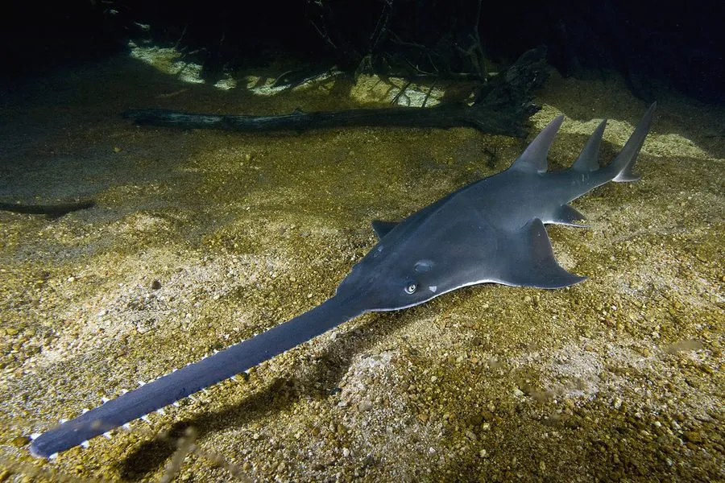

鱼类 · 动物界
锯鳐 Pristis pristis

吻部延长成锯状、两侧长有齿状棘的鳐类，曾广泛分布于热带河口，因渔业兼捕和栖息地丧失而极危。
- 分类
- 门脊索动物门纲软骨鱼纲目锯鳐目科锯鳐科属锯鳐属
- 栖息环境
- 热带和亚热带的浅海、河口和大型河流，可进入淡水
- 地理分布
- 全球热带和亚热带海域及河口，历史上包括地中海和大西洋东部
- 保护级别
- IUCN 极危（CR）；《濒危野生动植物种国际贸易公约》附录Ⅰ
物种志
锯鳐最醒目的特征是吻部，像一把长长的锯子，两侧排列着大小不一的齿状棘。体盘扁平，胸鳍宽大，体色背部灰褐或橄榄色，腹部白色。成鱼体长一般 3–5 m，最大可达 7 m 以上，是体型最大的鳐类之一。
锯鳐分布于全球热带和亚热带的浅海、河口和大型河流，能进入淡水生活。它常在沙泥底质上活动，用长锯左右摆动，击晕并刺穿小鱼和甲壳类，也会用锯上的感觉器官探测猎物。锯鳐生长缓慢、繁殖率低，每胎仅数尾。由于渔网兼捕、锯部被当作收藏品以及栖息地破坏，其种群急剧下降，IUCN 将其列为极危，并列入《濒危野生动植物种国际贸易公约》附录Ⅰ。
形态与习性
- 食性小鱼、甲壳类和软体动物
- 体长一般 3–5 m，最大可达 7 m 以上
- 吻部长锯状，两侧有齿状棘，兼作感觉器官
- 繁殖卵胎生，每胎仅数尾
- 栖息环境浅海、河口和大型河流，可进入淡水
- 保护渔网兼捕和锯部收藏贸易导致种群锐减
趣味知识
- 锯鳐的吻部像一把长锯，两侧的齿状棘能用来击晕和刺穿猎物。
- 吻锯上布满感觉器官，可以探测埋在沙泥中的猎物。
- 锯鳐生长缓慢、繁殖率低，一旦种群受损很难恢复。